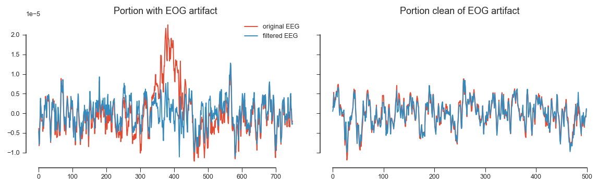

pyeeg.preprocess.MultichanWienerFilter
- class pyeeg.preprocess.MultichanWienerFilter(lags=(0,), low_rank=False, thresh=None)
This class implements a multichannel Wiener Filter for artifact removal. The method is detailed in the reference paper A generic EEG artifact removal algorithm based on the multi-channel Wiener filter from Ben Somers et. al.
To correctly train the model, one must supply portions of contaminated data and clean data. This can be selected visually using the annotation tool from MNE for instance, or automatically by detecting above threshold values and considering this as bad portions. It is ok to have large windows around bad data segments, however the clean segments must be artifact free.
The model expects zero-mean data for both noisy and clean segments.
- lags
Lags used for general model (NOT IMPLEMENTED YET)
- Type:
list
- low_rank
Whether to use low-rank approximation of covariance matrix for the artifactual data
- Type:
bool
- thresh
If int, this will correspond to the rank prior If float, it will be considered as the percent of variance to be kept
- Type:
int or float
- W_
Once fitted, contains the filter coefficients
- Type:
ndarray
Example
TODO: Add code example
Example of result obtained (cleaning EOG artifact here):

{kind=link}
Methods
MultichanWienerFilter.fit(y_clean, y_artifact)Fit model to data.
MultichanWienerFilter.fit_transform(y_clean, ...)Train the model on input and transform directly the data in x.
Get metadata routing of this object.
MultichanWienerFilter.get_params([deep])Get parameters for this estimator.
MultichanWienerFilter.set_fit_request(*[, ...])Request metadata passed to the
fitmethod.
MultichanWienerFilter.set_output(*[, transform])Set output container.
MultichanWienerFilter.set_params(**params)Set the parameters of this estimator.
Filter the data to remove artifact learned by the model.